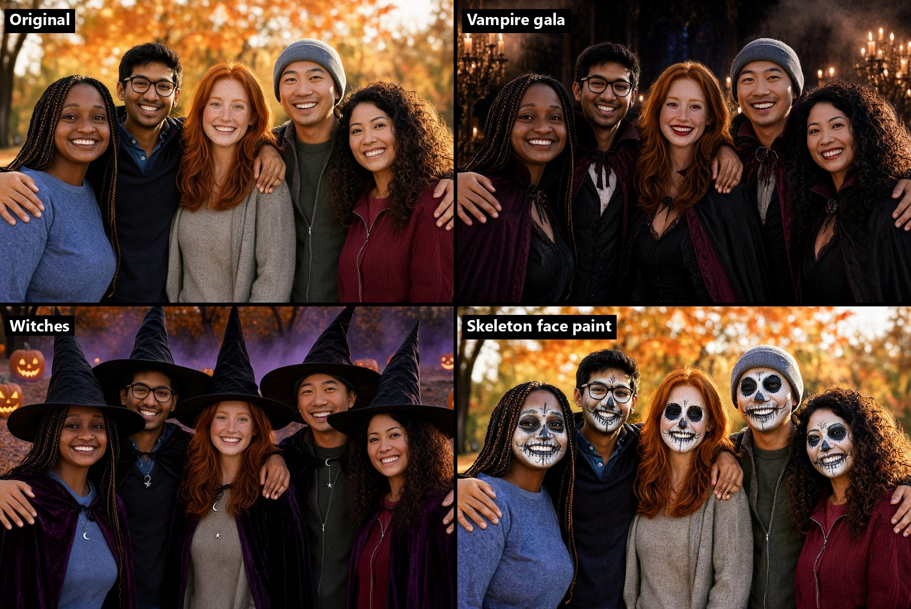

🎃 Halloween Switch
Upload a group photo, pick a costume, get a short before → flash → after video: the original photo, a white flash with a whoosh, then the same people in Halloween costumes, animated. An open-source ComfyUI pipeline built on FLUX 3 Image Klein and LTX 2.5, open weights only.
How it works
- Costume edit: FLUX 3 Image Klein restyles the photo while keeping every person's face, skin tone, expression and pose. A YuNet face count picks a solo or group prompt.
- Animation: LTX 2.5 animates the edited image (image-to-video, 5 s at 24 fps) with a static camera; only the setting moves: candle flames, fog, leaves.
- Reveal: FFmpeg assembles the original photo, a white flash with a synthesized whoosh, then the animated clip. If the animation fails, a slow zoom on the still image keeps the result a video.
It runs on a local ComfyUI or on Comfy Cloud, through the same HTTP API client.
Costume presets

| Preset | Look | Motion |
|---|---|---|
| Vampire gala | Victorian capes, red irises, subtle fangs, candlelit gothic hall | candle flames, fog, capes in a draft |
| Witches | pointed hats, velvet cloaks, moon jewelry, jack-o'-lanterns at dusk | pumpkin light, purple mist |
| Skeleton face paint | Day of the Dead face paint that follows each face, orange dusk | flickering light, drifting leaves |
All the people shown are AI-generated.
Privacy
EXIF metadata (GPS, camera) is stripped before upload; uploads and results are deleted from the app after 30 minutes.
Get started
Install instructions, model downloads and licenses are in the README on GitHub.